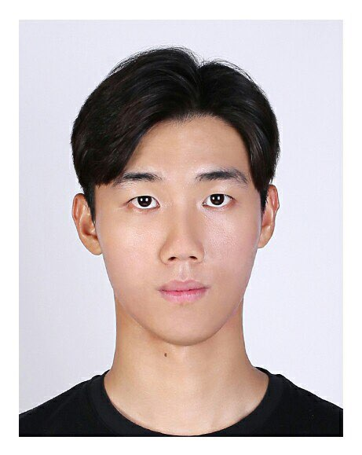
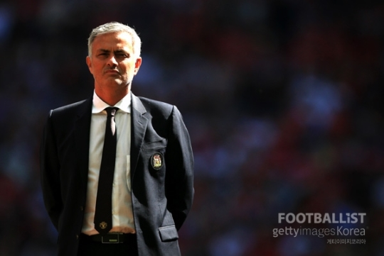

Hyeong-cheol he is...
Hyeong-cheol's life style
1. 철저한 계획자
얼굴에서 알 수 있듯 무슨 상황이든 철저한 계획하에 이루어지는 것을 선호한다. 
2. 존경하는 축구감독, 모토
무리뉴
무리뉴의 Blance적인 부분을 중시하는 점을 중점으로 다양한 전술적 견해를 시도,무리뉴가 Special One이었듯 그는 아시안 최초의 유럽 Pro Football League Manager 에 도전한다.

3. 미래_Future
그는 2021년 3월 광주대학교를 복학예정이며, 현장경험과 전술연구, 제 2외국어 습득을 통해 스페인 유학을 계획 중이다.